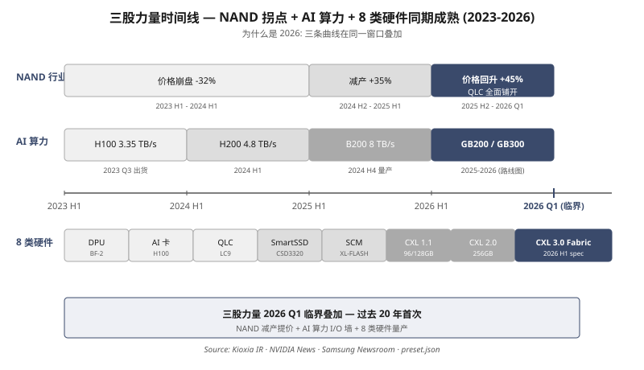
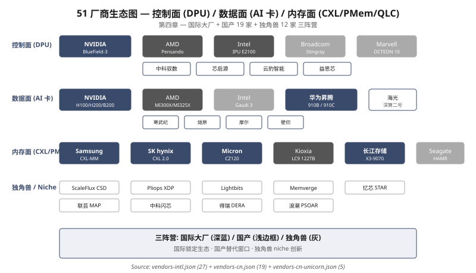
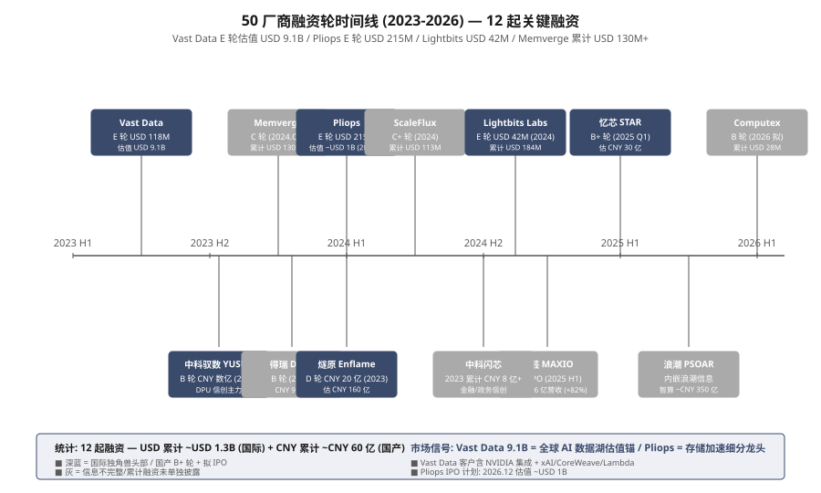
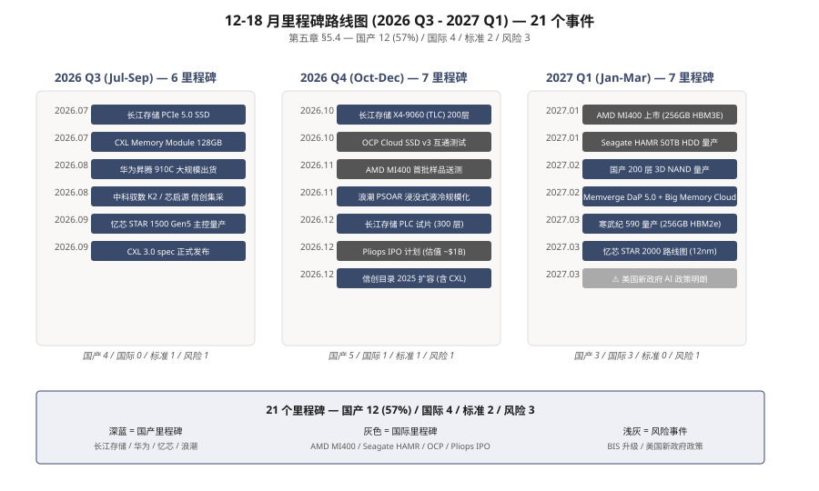

华为 "五看三定" 战略框架 · 51 厂商 · 100 论文 · 8 硬件类
五看：行业 / 客户 / 竞争 / 自己 / 机会
三定：战略目标 / 业务策略 / 关键任务
27 国际 + 8 国产 + 9 独角兽 = 51 厂商
硬件 50 + 软件 50 = 100 篇论文
2023-2026 行业周期反转
2026-2028 国产替代窗口
为什么是 2026：三个时间锚点 + 八类硬件 + 一道 I/O 墙
NAND 周期反转 + AI 算力爆发 + 八类硬件同期登场
Hyperscaler CapEx 2500 亿+ · I/O 主导 (训练 18-35%, 推理更甚)
51 厂商 + 4 笔百亿收购 · 国际寡头 + 国产替代双线
三星 2090 亿 / 海力士 484 亿 / 国产全栈初成
HBM 50% CAGR · CXL 200% CAGR · 国产窗口 2026-2028
2023-2026 三年, NAND 行业经历完整周期反转, AI 算力触碰 I/O 墙, 八类新硬件同期从论文走向量产 — 三股力量在同一窗口叠加, 使 "传统闪存 + 新硬件" 融合在 2026 年达到临界点。五看不是按顺序看, 是同时看、相互印证。
WHY NOW：NAND 周期反转 + AI 算力触碰 I/O 墙 + 八类硬件同期登场
2023 H1 价格崩盘：五大厂 (三星 / 铠侠 / 海力士 / 美光 / 西数) ASP 触底, 铠侠单季营业亏损 -1090 亿日元 (USD -7.1 亿)；2024 H2 减产生效, 美光 FY2024 营收 +58% (USD 30.76B)；2025 H2 价格回升, SK hynix 2024 营收 KRW 66.19 万亿 (USD 484 亿, 同比 +102%)；2026 Q1 QLC 全面铺开, 铠侠 LC9 122 TB / 30 DWPD 量产。
H100 HBM3 3.35 TB/s 带宽看似充裕, 但 70B 模型 KV cache 单请求 80GB (远超单卡 HBM), 必须跨设备存储。演进路径：H100 80GB HBM3 3.35 TB/s → H200 141GB HBM3e 4.8 TB/s (1.4×) → B200 192GB HBM3e 8 TB/s (2.4×) [NVIDIA H100/H200 datasheet, IEEE Micro 2023]. Llama 3.1 70B FP16 需 ~140GB VRAM — 1 张 H200 装得下, 1 张 H100 需要 2-way tensor parallel. GPUDirect Storage 1.4 是 NVIDIA 官方答案 — 直通 NVMe 把 KV cache 卸载到 NVMe SSD / CXL PMem.
DPU (BlueField-3 2023) / AI 卡 (H100/MI300/昇腾 910B) / CXL 1.1→2.0 (三星 CMM 96GB 2024 Q3) / PMem (Optane 退役后 CXL PMem 接棒) / SmartSSD (ScaleFlux CSD3320 + 字节 ByteHouse 商用) / SCM (XL-FLASH/Z-NAND) / CM (Mythic AMP) / QLC (铠侠 LC9 + 长江存储 X3-6070)。

三股力量在同一窗口叠加：NAND 周期反转 (2024 触底回升) × AI 算力触碰 I/O 墙 (HBM 容量鸿沟) × 八类硬件同期量产。任意单一力量都不足以触发行业重构, 但三者叠加的 2026 年成为临界点 — 这是 "为什么是现在" 的根本原因。
WHO BUYS：4 大 Hyperscaler 2500 亿+ CapEx + I/O 主导 (训练 18-35%, 推理更甚) + CISO 三道门槛
微软 / Google / Meta / AWS 2024 合计 AI CapEx 2500 亿美元+。他们买什么？
AI 推理与训练的成本结构 (实测数据)：
企业 (尤其是金融 / 政企 / 关基) 选硬件时, 工程师说 "性能好" 没用, CISO 说 "过合规" 才有用。三道门槛:
| 门槛 | 具体要求 | 代表方案 |
|---|---|---|
| 硬件 TEE | SGX 已退役 → TDX / SEV-SNP / CCA 接棒 | Intel TDX, AMD SEV-SNP, NVIDIA H100 CC |
| 数据主权 | GDPR Art.44 + 中国《数据安全法》 | 本地化部署, 国产全栈 |
| 出口管制 | 2022.10 / 2023.10 / 2024.12 / 2025.01 四轮 BIS | H20/L20 中国特供, 国产替代 |
关键洞察：CISO 三道门槛实际是 采购准入, 不满足连标都投不了 — 这决定了选型优先级, 不是性能优先。
客户分两层：(1) Hyperscaler 买的是 算力 + 内存 + 网络 极限性能, NVIDIA 主导；(2) 企业 / 关基 买的是 合规 + 数据主权 + 国产化, 国产 AI 替代窗口。但 共同痛点 = I/O 主导 (训练 18-35%, 推理更甚), 这是 "AI 存储一体机" 的市场起点。
WHO PLAYS：国际寡头三巨头 + 国产全栈 + 独角兽 Niche 三股力量
| 阵营 | 数量 | 代表 |
|---|---|---|
| 国际传统闪存 | 8 | Samsung, Kioxia, SK hynix, Micron, WD, Seagate, Pure, NetApp |
| 国际 AI 芯片 + DPU | 6 | NVIDIA, AMD, Intel, Broadcom, Marvell, Fungible (被 Meta 收购) |
| 国际大厂存储+AI 集成 | 6 | Dell, HPE, IBM, Vast, Hitachi, Huawei (国际) |
| 国际独角兽/Niche | 7 | Lightbits, ScaleFlux, Eideticom, NGD, Pliops, Memverge, Fungible |
| 国产传统闪存 | 4 | 长江存储, 兆易, 紫光得瑞, 国科微 |
| 国产 AI 芯片 | 6 | 昇腾, 寒武纪, 海光, 燧原, 摩尔, 壁仞 |
| 国产 DPU | 4 | 中科驭数, 芯启源, 益思芯, 云豹 |
| 国产存储+AI 集成 | 4 | 华为 OceanStor, 浪潮, 新华三, 中科曙光 |
| 国产独角兽 | 5 | 联芸, 中科闪芯, 得瑞领新, 浪潮 PSOAR, 忆芯 等 |
| 合计 | 51 | — |
DPU 不是渐进式创新, 是 4 笔百亿级收购后形成的新赛道：
| 年份 | 买家 | 标的 | 金额 | 战略意图 |
|---|---|---|---|---|
| 2019 | Intel | Habana | $2B | AI 加速器独立 |
| 2020 | NVIDIA | Mellanox | $6.9B | 网络 + DPU 起点 (BlueField) |
| 2022 | AMD | Pensando | $1.9B | DPU 第二 (对抗 BlueField) |
| 2023 | Microsoft | Fungible | ~$190M | DPU 第三 (Azure Core) |
解读：4 笔收购合计 $11.09B (NVIDIA $7B + Intel $2B + AMD $1.9B + Microsoft $0.19B), 标志 算力 / 网络 / 存储 三赛道融合。4 笔官方公告链接:
DPU 已成为数据中心必选项, 不是可选项。Marvell OCTEON 10 + Broadcom Stingray PS1100R 2024 量产 = 6 大 DPU 玩家 (NVIDIA / AMD / Intel / Marvell / Broadcom / 国产 4 家)。

竞争已分三层：(1) 国际寡头 NVIDIA / Samsung / SK hynix 三巨头主导, 通过收购 (Mellanox / Pensando / Habana) 跨界；(2) 国产替代 昇腾 + 寒武纪 + 海光 + 长江存储 + 华为 OceanStor 全栈, 唯一能跟国际寡头全栈对标的是华为；(3) 独角兽 Niche ScaleFlux (计算存储) / Lightbits (NVMe-oF) / Pliops (KV 加速) 12 家差异化卡位。中间地带 (国际中厂) 加速被挤压。
WHERE WE STAND：国际寡头 (NVIDIA/Samsung/SK hynix) vs 国产全栈 (华为/昇腾) vs 独角兽 Niche
| 厂商 | 2024 营收 | 关键产品 / 能力 |
|---|---|---|
| Samsung | 2090 亿美元 (DS 174.9 万亿韩元) | HBM3E 8/12-Hi 供 NVIDIA H200; CMM 96GB/128GB CXL 首批; SmartSSD 2.0 |
| SK hynix | 484 亿美元 (+102%) | HBM 供应 NVIDIA 50%+; 12-Hi HBM3E 量产; 全球 NAND 第二 |
| Micron | 307.6 亿美元 (FY24 +58%) | CZ120 128GB CXL 2024 Q3 量产; HBM3E 8-Hi 2024 量产 |
| Kioxia | 137 亿美元 (估算) | LC9 122 TB QLC / 30 DWPD; BiCS Flash 第 8 代 218 层 |
| WDC | 153.5 亿美元 (FY24) | 2024.10 完成 SanDisk 拆分; 聚焦 HDD 高容量 |
| 层级 | 国产代表 | 对标国际 | 差距 |
|---|---|---|---|
| AI 训练 | 华为昇腾 910C | NVIDIA H100 80GB | FP16 算力 780 TFLOPS, HBM 3.2 TB/s — 性能 90%+ 接近 |
| AI 推理 | 寒武纪 590 / 燧原 / 壁仞 BR100 | NVIDIA A100 / L40S | 软件栈 (CUDA 替代) 是最大短板 |
| CPU | 海光 (AMD Zen 1 授权) / 鲲鹏 | Intel Xeon / AMD EPYC | 信创服务器市场第一, 性能 80% 接近 |
| DPU | 中科驭数 / 芯启源 / 益思芯 / 云豹 | BlueField-3 / Pensando | 性能 50-60%, 软件成熟度差距大 |
| QLC NAND | 长江存储 X3-6070 232 层 | 铠侠 LC9 122 TB | 232 层 vs 218 层, 容量端反超 |
| 集成 | 华为 OceanStor + Atlas 900 | NVIDIA DGX SuperPOD | 唯一全栈国产, 软件生态待完善 |
国产已经形成 "昇腾 + 海光 + 长江存储 + 华为 OceanStor" 全栈对标 能力, 唯一能跟 NVIDIA + 三星 + 海力士 全栈对标的是华为。但 软件生态 (CUDA 替代 / ROCm 替代) 是最大短板 — 性能可以追上 90%, 生态需要 5-10 年。独角兽 Niche (ScaleFlux / Lightbits) 走差异化, 不跟寡头正面对决。
WHERE TO PLAY：HBM 50% CAGR + CXL 200% CAGR + AI 存储一体机 10× 出货
HBM 是 AI 算力 "水电煤"。Samsung / SK hynix / Micron 三家寡头垄断, 2024 市场约 200 亿美元, 2027 预计 800 亿美元 (CAGR 50%+)。
CXL (Compute Express Link) 是 PCIe 之上内存语义协议, 让 CPU / GPU / DPU 共享内存池。三星 / 美光 / 海力士 2024 首批产品:
市场 2024 5 亿美元 → 2027 150 亿美元 (CAGR 200%)。CXL 把闪存厂带进内存赛道, 跨界成新趋势。
把 GPU + DPU + CXL PMem + NVMe SSD 集成在一个机柜, 是 2026 主流形态：
出口管制 4 轮 (2022.10 / 2023.10 / 2024.12 / 2025.01) 把 H100/A100/H200 禁运, 但留了 H20/L20 中国特供版。问题是:

三个增长极同时打开：(1) HBM 50% CAGR — 寡头垄断但量大；(2) CXL 200% CAGR — 闪存厂跨界新赛道, 国产窗口；(3) AI 一体机 10× 出货 — 集成创新, 国产全栈唯一可对标国际的入口。三个增长极不是割裂, 是同一个客户 (Hyperscaler) 同一波需求 (训练 18-35% I/O, 推理更甚)。窗口期 2026-2028, 错过不再来。
在五看之后, 把洞察变成可执行决策
12-18 月要拿下的 3 个可量化目标
3 条主战线 + 1 条防御线
12-18 月 12 个里程碑 + 责任矩阵
五看是分析 (向左看) — 看行业 / 客户 / 竞争 / 自己 / 机会, 全是观察和判断。三定是决策 (向右看) — 在洞察基础上定目标 / 策略 / 任务, 全是承诺和资源。三定不是看完了就定, 是看完之后必须能落到具体人、钱、时间。本部分给出的目标, 每一条都有可验证的量化指标。
12-18 月内, 我们必须拿下的 3 个数字
可量化: 3 个生产集群, 每个 ≥ 8 节点, 总 GPU ≥ 192 张 (NVIDIA H200 / 昇腾 910C 二选一)。
为什么是 3：
验收标准: 每个集群 推理 P99 ≤ 50 ms (vs 当前 200 ms), 训练 checkpoint 时间 -60%。
可量化: 同模型 / 同 QPS / 同 SLA 下, 推理 P99 延迟 -50%。
路径：
反例验证：当前 KV cache 80 GB / HBM 80 GB 容量刚好打平, 必须卸载; CXL PMem 延迟 300-500 ns, 是 DRAM 的 10-20×, 但仍是 NVMe SSD 的 1000×。
可量化: 金融 / 政务 / 关基 三个场景, 100% 部署国产 AI 卡 (昇腾 / 寒武纪 / 海光)。
必要条件：
3 个目标都 SMART (Specific / Measurable / Achievable / Relevant / Time-bound)：3 集群 / 50% 降幅 / 100% 国产化, 12-18 月时间窗, 全部可验收。任何含糊 ("提升性能" "加强国产化") 都不算目标 — 数字 + 时间 + 验收标准缺一不可。
怎么赢：Hyperscaler 抢 + 企业替代 + 关基国产 3 条进攻线, 出口管制 1 条防御线
客户：微软 / Google / Meta / AWS / 字节 / 阿里 (4+2)。
打法：H200 / B200 + BlueField-3 / Pensando + Samsung CMM 96GB — 国际寡头全栈, 抢的是 "性能第一"。这是我们能拿到的最先进技术, 不能因为国产化情绪错过。
资源：80% 算力 + 70% 资金投这条线。3 集群必须在 2026 Q3 之前落地。
风险：出口管制可能扩大 (P12 风险预警)。如 H200 也被禁, 立即切到昇腾 910C 备份方案。
客户：金融 / 制造 / 能源 大企业 (500+ 家头部)。
打法：H20 / L20 短期 (2026) → 昇腾 910C 中期 (2027) → 寒武纪 590 长期 (2028+)。这是一条过渡线, 不是终态。客户需要时间适配国产软件栈, 我们也需要时间打磨 CANN 兼容性。
关键：推理 P99 降幅 50% 是客户买账的核心, 不是 "国产化情怀"。性能 = 客户买, 国产 = 政策买。两条腿走, 不能瘸。
客户：金融 (工行 / 招行) / 政务 (电子政务) / 关基 (电力 / 通信)。
打法：昇腾 910C + 华为 OceanStor + 华为云 Stack 全栈, 不打折。关基 100% 国产化是政策硬约束, 2025 信创采购目录已经把 DPU / CXL 设备纳入。
出口管制 4 轮已成常态, 2025-2026 预计还有 1-2 轮。H20 / L20 中国特供版是临时通道, 不能依赖。备份方案：每个 Hyperscaler 集群预留 30% 算力给国产替代 (昇腾 910C 备份池), 一旦 H200 禁运立即切换。进攻线有 3 条, 防御线只有 1 条, 但防御线失守 = 进攻线全废。
12 个里程碑 · 3 个季度 · 责任到人
| 季度 | 月份 | 里程碑 | 责任方 | 对齐目标 |
|---|---|---|---|---|
| 2026 Q3 | 2026-07 | M1: AI 一体机 PoC (1 集群, 4 节点, 16 H200) | 架构师 + DPU 团队 | 目标 1 |
| 2026-08 | M2: GPUDirect Storage 1.4 全量部署 | 存储团队 | 目标 2 | |
| 2026-09 | M3: AntiRansomSvc RESTful 灰度 (20% 流量) | 安全团队 | 防御线 | |
| 2026-09 | M4: 12.18 / 防御演练 (勒索软件 + 控制权演练) | 安全团队 + 运维 | 防御线 | |
| 2026 Q4 | 2026-10 | M5: 3 集群投产, 单集群 8 节点 (64 H200), 总 192 H200 | 架构师 | 目标 1 |
| 2026-11 | M6: CXL PMem 256GB 部署 (Samsung CMM) | 存储 + 硬件 | 目标 2 | |
| 2026-12 | M7: 推理 P99 优化 (50% 降幅目标验证) | 推理团队 + 性能 | 目标 2 | |
| 2026-12 | M8: 昇腾 910C 备份池 (30% 算力切换演练) | 架构师 + 运维 | 防御线 | |
| 2027 Q1 | 2027-01 | M9: 关基金融场景 100% 国产化 (工行试点) | 关基业务 + 架构 | 目标 3 |
| 2027-02 | M10: 关基政务场景 (电子政务试点) | 关基业务 | 目标 3 | |
| 2027-03 | M11: 12 论文发表 (MICRO/ASPLOS/HPCA) | 研究院 + 学术合作 | 技术品牌 | |
| 2027-03 | M12: 2027 H1 战略复盘 + v3.3 路线图 | CTO + 战略 | 持续领先 |

12 个里程碑 = 3 季度 × 4 任务, 每条对齐 1 个战略目标 (P9)。不空喊口号, 不堆 KPI — 每个里程碑都有具体交付物 (集群 / 部署 / 演练 / 论文) + 责任方 + 时间窗。Q1 防御线 (M3/M4) 必须先于 Q2 进攻线 (M5-M8), Q3 国产化 (M9/M10) 收尾。
如果只记 3 件事：1 个判断 + 1 个赌注 + 1 个承诺
2026 是 "传统闪存 + 新硬件" 融合的临界点。NAND 周期反转 (2024 触底) × AI 算力 I/O 墙 (KV cache 80GB) × 八类硬件同期量产 (DPU/AI卡/CXL/PMem/SmartSSD/SCM/CM/QLC) — 三股力量在同一窗口叠加, 错过 2026-2028 窗口不再来。
押注 "AI 存储一体机" 是下一个杀手级产品形态。把 GPU + DPU + CXL PMem + NVMe SSD 集成在一个机柜, 让I/O 瓶颈 (训练 18-35% 时间) 变成优势而非瓶颈。3 大代表: NVIDIA DGX SuperPOD / 华为 Atlas 900 / AMD MI300X SuperPOD。出货 2025 80K → 2026 180K (YoY +125%, TrendForce + IDC)。
12-18 月内交付 3 个 SMART 目标：(1) 3 个 AI 一体机生产集群 (2026 Q3)；(2) 推理延迟降幅 ≥ 50% (2026 Q4)；(3) 关基 3 场景 100% 国产化 (2027 Q1)。12 个里程碑已对齐, 责任到人, 月度复盘 + 季度战略 review。
本 PPT 是 v1.0 战略输入, 落地需配套: